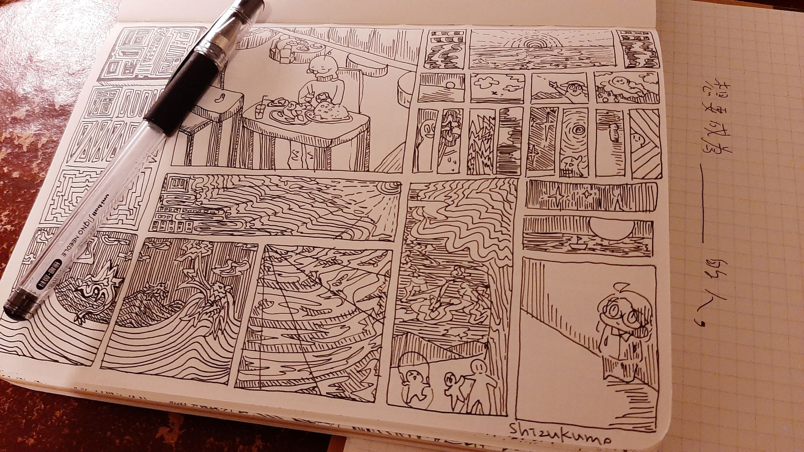

熱愛卻放棄
**明明從小就很清楚自己熱愛創作，為什麼遲遲沒有開始？
我是自然而然就喜歡創作東西的人。
在還沒接觸到電視與網路的時期，小時候的我很愛用神奇寶貝模型讓他們演故事，小學後在安親班寫功課的動力，是想趕緊在筆記本上塗鴉。 接觸網路之後開始寫小說，設定角色與世界觀，甚至國中聯絡簿充滿自創小說讓老師困擾。 學生時期的我，課本上總是滿滿的塗鴉，放學後與朋友在黑板上揮灑畫筆玩樂。
然而這些好玩、有趣，隨著年齡增長而被壓抑起來。 也許是生在升學導向風氣盛行的社會當中，大人只知道一條主流的路而不鼓勵藝術。我也就乖乖聽話一路升學、工作，開始習慣唱衰自己沒辦法、自我設限，為了生存打拼慢慢就忘記怎麼畫畫。
工作幾年，被現實毒打，與焦慮症纏鬥，逐漸忘記了怎麼與自己對話，傾聽內心真實聲音。 寫作也是，只剩下日記本與自我對話，還有零碎的社群貼文，鮮少創作。
重拾畫筆的原因
社畜時期，意外喜歡上了Vtuber(使用虛擬形象的直播主)，成了我重拾畫筆的契機。很幸運地在發布同人圖後收到直播主們的留言鼓勵，於是開始多年的同人創作旅程。 這時候的生活很單純，上班下班，休假畫畫，畫得不好也不在意，也不會被按讚數字影響，因為只是單純享受畫畫的好玩。 這時的初衷是單純想要應援喜歡的直播主，雖然沒有累積原創作品，但繪畫技巧、構圖上色等等，都是在這個時候累積的經驗，並且單純的生活環境也對焦慮症的復原有很好的影響。
下定決心做自己的創作
穩定的生活持續幾年，身心狀況也漸漸平復，我開始思考為什麼我不做原創呢？明明小時候這麼喜歡創造亂七八糟的東西。 但是現在的我，到底想要做什麼樣的創作？想要表達什麼東西給世界？想要成為什麼樣的人？ 如果做自己的東西，它們又會是長什麼樣子？
也許是停止與自己對話太久，且已經習慣在同人世界翻滾，我竟然無法思考該如何開始。 如果我能將自身經驗與體悟，用自己滿意的方式表達出來就好了。這份心情始終沉澱在心裡。
如何找尋並回歸創作初衷
經過自卑的童年、憂鬱的青少年與焦慮的新鮮人時期，現在的我來到人生的分水嶺。 思考沉澱後得出的解答，對我來說創作的主要目的，是想將生命中渴望訴說的故事用適合的形式表達出來。我想要用個人走過的經驗，分享出來讓人借鏡。 為了這點，我需要勇氣站到檯面上，去承擔敘事責任。 所以我才終於下定決心開設頻道與部落格，想要利用新時代的槓桿將自己的產品或理念分享出去。
對我來說創作是一種本能，是將腦袋裡無止境的聲音與畫面想法傾瀉而出，不這麼做的話反而會感到空虛與窒息。 創作者們都能體會吧，不去表達或創造，會有一種快要爆炸的感覺，感覺有千萬縷思緒在腦袋當中攪和卻打結成一團，你必須要用各種方式讓它們降生於世，不管載體是文字、圖像還是音樂。
我想這就是人無法停止創作的基本動力吧。 期許自己莫忘初衷，一步一腳印，踏實地建立起屬於自己，也能讓人感到安心或被理解的避風港。